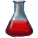

Кровь высшего вампира
Предметы / Ресурсы
Открыть в интерактивной вики →
| Вес | 1 |
|---|
Описание
Пульсирующая энергией кровь высшего вампира. Выпейте ее, чтобы стать сильнее.
Получение: Во время выполнения квеста "До последней капли крови"
После использования дает эффекты, действующие только в зоне Беирна, за исключением Монастыря:
- Скорость отдыха: +20%
- Увеличенный урон: +20%
- Восстановление ХП: +2%
- Восстановление ресурсов: +5%
Время действия - 3 часа.
Получение: Во время выполнения квеста "До последней капли крови"